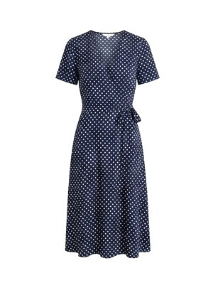
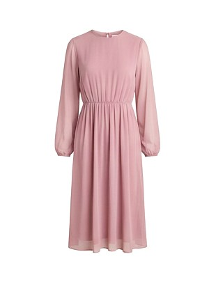

مختارات لك
8 قطع
3
الكل
فساتين
ملابس
شنط
أحذية
قطع مختارة على حسب تصفحك ومفضلتك
كنزة صوف ملونة
ملابس · ممتازة · استُخدمت مرتين
98
غير متوفر
قميص قطن مريح
ملابس · كالجديدة · استُخدمت مرة
76
معطف ترنش كلاسيكي
ملابس · ممتازة · لم تُستخدم
520
شنطة جلد كلاسيكية
شنط · جيدة · استُخدمت 3 مرات
320
فستان بليسيه طويل
فساتين · ممتازة · استُخدمت مرتين
210

فستان منقّط كحلي
فساتين · ممتازة · استُخدمت مرتين
120
فستان تريكو طويل
فساتين · ممتازة · استُخدمت مرتين
175

فستان شيفون وردي
فساتين · ممتازة · استُخدمت 3 مرات
160

 غير متوفر
غير متوفر


 غير متوفر
غير متوفر